GBA, NES and SNES. Together.
Launch one to four games from three generations. The layout adapts automatically from solo play to a full 2×2 grid.
The open-source emulator built for game night. Play GBA, NES and SNES side by side with up to four controllers—local, synchronized and made for the TV.
NO ACCOUNT · NO CLOUD · YOUR ROMS STAY LOCAL
GBA, NES and SNES sessions share the same focused interface: every player visible, every controller separate and every game under one roof.

Launch one to four games from three generations. The layout adapts automatically from solo play to a full 2×2 grid.

GBA games can trade and battle through the emulated four-player link bus, with live status in the HUD.

Reset all games in sync, start a stopwatch or set a countdown. The empty quadrant becomes the timer with three players.

Speed up every instance together from 1× to 4×, snapshot the complete session and restore it with one key.
A clean launcher gets everyone into the session. Controls remain one key away and disappear as soon as you no longer need them.
The original rules still apply. Player 1 is the parent device and must join every trade or battle. Enter the Cable Club together and switch back to 1× speed for the cleanest connection.
The link bus is a GBA feature. NES and SNES games use SplitEmu’s shared-screen, race and session controls without GBA link emulation.
No account, no setup wizard and no bundled games. Download the app, add dumps from cartridges you own and press start.
Grab the latest release for macOS, Windows or Linux.
Choose your own .gba, .nes, .sfc or .smc dumps in the launcher.
Connect controllers, choose the player count and go fullscreen on the TV.
SplitEmu ships no games and downloads none. Use only ROM files dumped from cartridges you own. Nintendo, Game Boy Advance, Nintendo Entertainment System and Super Nintendo are trademarks of their respective owners; this independent project is not affiliated with or endorsed by them. The screenshots use the freely available homebrew game Anguna.